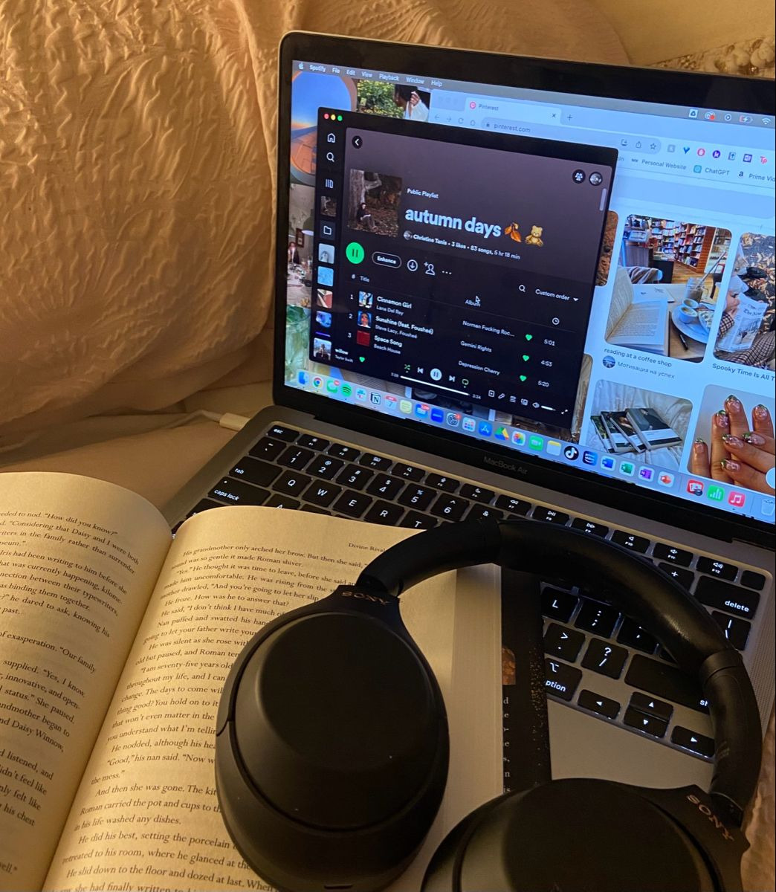

ESCUCHAR MÚSICA
Creo que este es uno de mis hobbies principales, porque amo hacer cosas con música. ♥
Mis géneros favoritos de música:
- Indie pop
- Indie folk
- Pop
Top 3 Artistas:
Justin Hawkins

Justin Hawkins es un joven músico y artista independiente originario de Seattle, Washington, conocido por su trabajo como compositor e intérprete de música original. Tiene alrededor de 20 años y publica sus propias canciones y demos, incluyendo temas como Truth, 3am in Seattle, Broken Halls y Seasons, que reflejan un estilo personal y creativo en plataformas como SoundCloud y Spotify.
Mis canciones favoritas:
- Views
- Seasons
- Deep end
Novo Amor

Novo Amor es el nombre artístico de Ali John Meredith-Lacey, un músico, cantante, compositor y productor galés nacido el 11 de agosto de 1991 y radicado en Cardiff, Gales (Reino Unido). Es conocido por su estilo musical íntimo, etéreo y lleno de atmósferas, fusionando elementos de indie-folk, música alternativa y paisajes sonoros ambientales en sus canciones.
Mis canciones favoritas:
- State Lines
- Anchor
- Keep me
Chase Atlantic

Chase Atlantic es una banda musical australiana formada en 2014 en Cairns, Queensland, Australia. El grupo está compuesto por Mitchel Cave, Clinton Cave y Christian Anthony, quienes son amigos y colaboradores desde sus inicios. Su sonido es una mezcla única de R&B alternativo, pop, rock, trap y pop alternativo, con una estética a menudo descrita como dark alternative pop (pop alternativo oscuro) con influencias de rock y R&B.
Chase Atlantic escribe, produce y graba prácticamente toda su música por sí mismos, algo que los ha ayudado a construir un estilo propio y experimental. Comenzaron publicando EPs independientes y ganaron atención internacional con su single “Friends” y otros temas como Swim antes de lanzar su primer álbum homónimo en 2017.
Mis canciones favoritas:
- I THINK I'M LOST AGAIN
- Into It
- Under Pressure